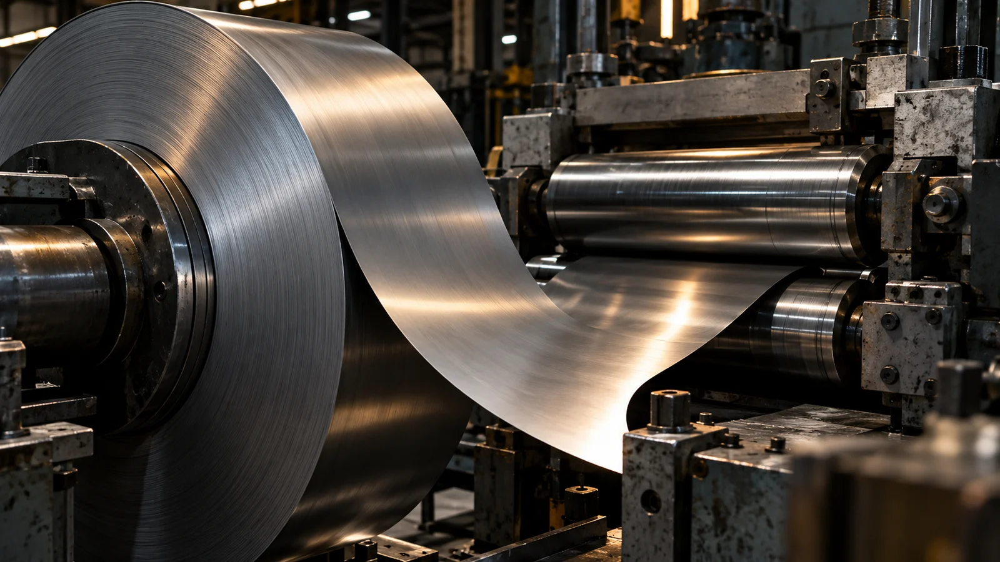
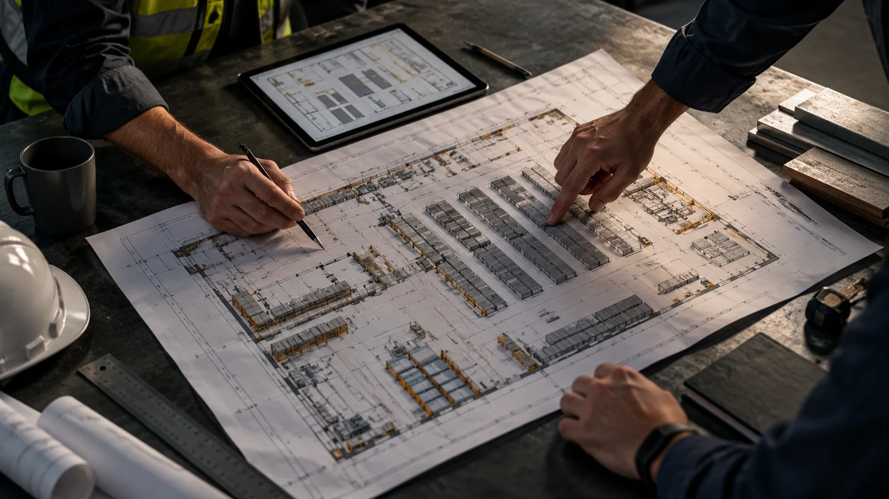
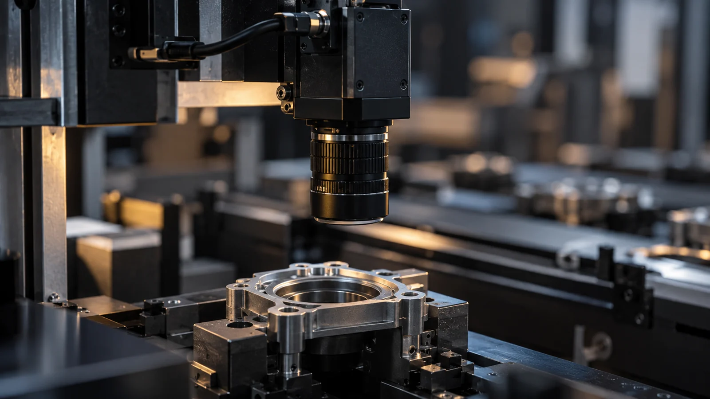

Link commercial and engineering data
Bring order status from ERPNext together with drawing references from Tekla and fabrication information from PowerFab.
PRORACK AI / DIGITAL INTELLIGENCE
Projects, engineering, manufacturing and site teams produce valuable information every day. ProRack AI is our vision for connecting that information into a useful picture of work in progress.
Less chasing updates. More clarity on the next decision.
Digital intelligence is presented as a product vision and interactive demonstration. Screens and figures are illustrative unless explicitly identified as verified live data.

THE BIG PICTURE
Start with what matters to your operation. All six areas are explained below, with examples you can see without navigating away.
Instead of hunting through scattered spreadsheets, email threads and disconnected systems, the platform concept brings each project into one understandable view.
Why it matters Everyone works with clearer context, using the systems they already know.
Bring order status from ERPNext together with drawing references from Tekla and fabrication information from PowerFab.
See which team holds the next action, what has been approved and where a revision may matter.
The proposed intelligence layer reads and interprets information; it does not replace source systems of record.
Interactive concept using sample sources, not an active integration.
Customers and managers should not need five separate calls to understand progress. A connected operations view is intended to show project stages, owner assignments, blockers and delivery readiness.
Why it matters Identify delays early and coordinate the right response.

Understand approvals, procurement, manufacturing, dispatch and installation readiness.
Surface pending decisions or handoffs together with the responsible team.
Provide clear progress summaries without confusing estimates with verified completion.
Illustrative project and machine metrics only. No live project connection.
Where supported by machine controllers, connected production signals could help teams see machine availability, downtime and output, instead of relying only on manual updates.
Why it matters Improve visibility of machine performance and potential disruption.

Capture operating or stopped signals where approved PLC and gateway access exists.
Relate relevant alerts to production schedules so teams can investigate faster.
Summarize selected cycle counts, output and quality signals when instrumentation supports them.
Simulated telemetry, not data from connected machinery.
Imagine asking what is holding up a delivery, who owns a pending drawing or what changed in production. The proposed AI Copilot aims to return a grounded answer with its evidence.
Why it matters Reduce the time spent chasing updates and assembling reports.

Ask about projects, engineering changes, procurement or delivery status.
Show relevant source documents, timestamps and limitations with an answer.
Any write action should require the right permissions and explicit confirmation.
Sample questions and responses only. No access to live company records.
Useful intelligence depends on trust. The proposed architecture keeps existing enterprise systems authoritative and designs for role-based access, auditability and controlled factory integration.
Why it matters Connect information without making operations or sensitive data openly accessible.

Design permissions around what a sales, engineering, production or management user actually needs.
Associate summaries and AI-assisted answers with their original systems and document references.
Plan secure edge connections with appropriate OT network isolation and review before deployment.
Demonstration of proposed permissions; not proof of a deployed security configuration.
The longer-term vision extends beyond reporting, with carefully validated AI and automation for scheduling, risk detection, quality and maintenance.
Why it matters A transparent view of planned directions, not promises of currently available features.

Investigate dynamic scheduling that accounts for production constraints and changes.
Explore computer vision inspection and predictive machine-health approaches.
Study connected asset models and human-approved automation across project processes.
Future concepts are subject to research, engineering validation and separate rollout decisions.
LET'S TALK ABOUT YOUR OPERATION
Whether your priority is project visibility, production insight or a more connected customer experience, start with the workflow you want to improve.
Talk to our team